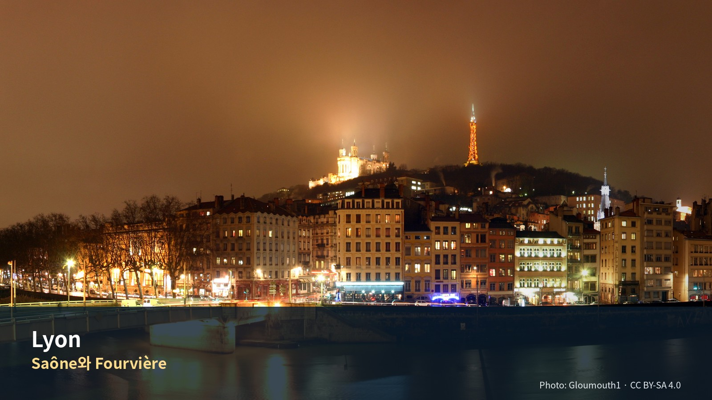

리옹과 안시 4박 5일
두 강의 도시, 르네상스 골목, 비단언덕과 알프스 호수
여행의 역할: 프로방스의 자동차 여행을 마치고 철도·도보 중심의 도시생활로 전환하는 구간이다. 리옹에서는 박물관을 많이 보는 대신 도시 지형, 르네상스 구시가지, 프레스킬의 광장, 크루아루스의 비단노동자 동네, 시장과 부숑 음식을 경험한다. 하루는 안시로 당일치기하여 알프스 호수도시라는 완전히 다른 지역성을 추가한다.
여행자 기준: Jason·Julia는 새로운 도시와 지역을 방문하는 경험을 미술관·박물관보다 우선한다. 따라서 Musée des Beaux-Arts, Musée des Confluences, Institut Lumière 등은 기본 일정이 아니라 비·피로·관심도에 따른 선택 모듈로 둔다. Julia의 수영도 선택 일정이며 숙소 선정조건이 아니다.
치안에 대한 결론: 인터넷에서 보이는 “리옹은 프랑스 범죄율 1위 도시”라는 표현은 프랑스 정부가 발표한 공식 순위가 아니다. 프랑스 내무부 SSMSI의 2025년 시·구 단위 자료는 14개 주요 범죄·위반 지표를 각각 공개하며, 리옹·파리·마르세유는 구별 자료도 제공한다. 정부는 하나의 ‘도시 위험 총점’을 발표하지 않으므로, 민간사이트가 서로 다른 범주의 건수를 합산한 순위는 포함 범주·인구기준·관광객·통근인구 처리방식에 따라 결과가 달라진다. 리옹 관광청은 리옹권을 안전한 여행지로 안내하면서도 Vieux Lyon과 혼잡한 대중교통의 소매치기를 특히 경고한다. 이번 일정은 강력범죄 공포보다 관광지 소매치기, Part-Dieu 수하물 관리, 야간 귀가와 숙소 입지를 현실적으로 관리하도록 설계한다.
디자인 메모: 최종본에는 지도·사진을 넣는다. 현재 작업본에는 삽입 위치와 이미지 제목·설명만 배치한다.
일자
주제
일정 한눈에
한눈에 보는 실행 요약
| 항목 | 확정·권장 내용 |
|---|---|
| 체류 | 2026년 9월 21일 월요일 체크인 → 9월 25일 금요일 체크아웃, 4박 |
| 이동 | 9/21 Avignon TGV역 렌터카 반납 → Lyon Part-Dieu TGV. 9/25 Lyon→Paris TGV |
| 여행 주제 | Fourvière 지형 · Vieux Lyon과 traboules · Presqu’île 광장과 강변 · Croix-Rousse 비단동네 · Lyon 음식 · Annecy 호수도시 |
| 기본 숙소권 | Ainay–Ampère–Bellecour 남부 1순위. Brotteaux–Masséna–Foch 2순위 |
| 숙박 형태 | 4박이므로 아파트호텔 또는 조용한 호텔. 24시간 또는 야간 프런트, 엘리베이터, 냉방, 객실금고, 밝은 귀가동선 확인 |
| 계획 숙박예산 | 2인 4박 €500–900 실속·중간급 목표. 프리미엄 아파트·부티크호텔은 €900–1,300까지 가능. 실시간 총액 아님 |
| 필수 | Fourvière 전망·Vieux Lyon·traboules·Presqu’île·Croix-Rousse·Halles Paul Bocuse 또는 전통시장 |
| 당일치기 | 9/24 Annecy — 구시가지·운하·호숫가·1시간 크루즈 선택 |
| 미술관 | 기본 일정에서 제외. 비·피로 시 Musée des Beaux-Arts 또는 Musée des Confluences 중 1곳만 |
| 음식 | bouchon 2회 이하. quenelle·salade lyonnaise·saucisson brioché·cervelle de canut·praline tart 중 선택 |
| 운동 | Jason: Rhône 강변 또는 Parc de la Tête d’Or 러닝 1회. Julia: LOU Piscine 선택 수영 |
| 치안 운영 | 역·관광지·혼잡한 차량에서 지퍼형 크로스백, 휴대전화 뒷주머니 금지. 수하물 도착일은 Part-Dieu→숙소 택시 권장 |
| 피로도 | 도시일 2–3, Annecy 4, 이동일 3–4 |
일정의 핵심 논리
9/21 Avignon TGV 차량반납 → Lyon Part-Dieu → Ainay·Presqu’île 적응
↓
9/22 Fourvière → Vieux Lyon → traboules → Saône·Presqu’île
↓
9/23 Croix-Rousse 시장·비단동네 → Halles Paul Bocuse → Parc de la Tête d’Or
↓
9/24 Lyon Part-Dieu ↔ Annecy — 구시가지·호숫가·크루즈
↓
9/25 아침 생활권 산책 → Part-Dieu → Paris
날짜별 확정 일정
| 날짜 | 테마 | 핵심 방문지 | 피로도 |
|---|---|---|---|
| 9/21 월 | 도착과 두 강의 도시 적응 | Ainay·Bellecour·Jacobins·Saône 강변 | 3/5 |
| 9/22 화 | 리옹의 역사축 | Fourvière·Vieux Lyon·traboules·Presqu’île | 4/5 |
| 9/23 수 | 생활도시와 미식 | Croix-Rousse 시장·비단동네·Halles·Parc | 3/5 |
| 9/24 목 | 안시 당일치기 | Vieille Ville·Thiou 운하·호수·크루즈 | 4/5 |
| 9/25 금 | 파리 이동 | 시장 또는 강변 짧은 산책·Part-Dieu TGV | 3/5 |